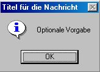
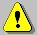
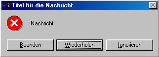

SelfProfan²:Windows Modus
Windows-Modus
Nachdem wir nur im Textmodus gearbeitet haben, möchte ich jetzt den Windows-
Modus vorstellen. Hier erfolgt alles,wie es im echten Windows erfolgt. Viel Spass!
Ein Erstes minimalistisches Beispiel:
Declare string1$,zahl1%
string
MessageBox(blatt1$,"Titel für die Nachricht",64)
Na, hier wird es schon schwerer:
Input$($,$,$) ist ebenfalls eine Funktion,sie ist für eine Eingabe zuständig. Die
Parameter(Werte) sind:
Nachricht,Titel,Vorgabe.Beispiel: string1$=Input$("Nachricht","Titel","Vorgabe")
das sieht dann so aus:

Die zwei Knöpfe werden Automatisch erzeugt. Den Titel und der Text sind dem
Beispiel oben entnommen. Die ausgabe sieht dann so aus:

Wenn ich einen anderen Text eingegeben hätte, stände Als Nachricht der Text
dort, den Ich eingegeben habe. Warum?
Das ganze funktioniert auf dem Input-prinzip, nur ist dass hier (input$()) ein
erweiterter Input-Befehl. MessageBox() kann man mit Print vergleichen, nur
dass der Text in einem kleinen Dialogfenster angezeigt wird. Die Syntax für die
MessageBox muss so aussehen:
"Nachricht"(kann auch ein String sein, bei Integern muss Str$() angewendet werden)
"Titel"
Zahl
Die Zahl bestimmt, welche Knöpfe angezeigt werden sollen.Möglich sind:
Knopf-Werte:
| 0 | OK |
| 1 | OK,Abbrechen |
| 2 | Abbrechen,Wiederholen,Ignorieren |
| 3 | Ja,Nein,Abbrechen |
| 4 | Ja,Nein |
| 5 | Wiederholen,Abbrechen |
| 0 | Kein Icon |
| 16 | |
| 32 | |
| 48 |  |
| 64 |
0 Erster Knopf ausgewählt
256 Zweiter Knopf ausgewählt
512 Dritter Knopf ausgewählt
Und die Fensterart wird auch noch bestimmt. Sie ist aber meistens 0:
0 "normales" Fenster
4096 Fenster, dass als TitelSymbol das Windows-Logo hat und normalerweise
nur als "Fehler"-Fenster benutzt wird und andauernd im Vordergrund ist.
Nun müssen alle Werte zusammengezählt werden. Z.B.
Ich will die Knöpfe "Abbrechen,Wiederholen,Ignorieren" und das "Stop"-Icon,
weiterhin soll es ein "Systemfehler"-Fenster sein und der 2 Knopf ausgewählt:
2+16+256+4096=
4370

Der Quelltext lautet:
MessageBox("Nachricht","Titel für die Nachricht",4370)
Und nicht mehr oder weniger!
Es ist klar, dass man sich nicht alle MessageBox-Style auf einmal merken kann,
deshalb kann man ja immer wieder nachschauen.
Um herauszufinden, welchen Knopf der Benutzer gedrückt hat, kann man die
MessageBox so anwenden:
Declare ergebn%
ergbn% = MessageBox("Drücke bitte einen Knopf","MessageBox",0)
If Equ(ergbn%,1)
<... OK wurde angeklickt ...>
ElseIf Equ(ergbn%,2)
<... Abbrechen(von den 2 Buttons OK,Abbrechen) wurde angeklickt ...>
ElseIf Equ(Ergbn%,3)
<... Abbrechen(von Abbrechen,Wiederholen,Ignorieren) wurde angeklickt...>
ElseIf Equ(Ergbn%,4)
<... Wiederholen wurde angeklickt ...>
ElseIf Equ(Ergbn%,5)
<... Ignorieren wurde angeklickt ...>
ElseIf Equ(Ergbn%,6)
<... Ja wurde angeklickt ...>
ElseIf Equ(Ergbn%,7)
<... Nein wurde angeklickt ...>
Else
MessageBox("Hier geht etwas nicht mit rechten Dingen zu!","MessageBox",0)
EndIf
Eigentlich verständlich oder? Die Funktion MessageBox gibt einen Wert zurück, der
entweder 0,1,2,3,4,5,6 oder 7 sein kann, die Bedeutungen der Zahlen lassen sich
aus dem Quelltext entnehmen.